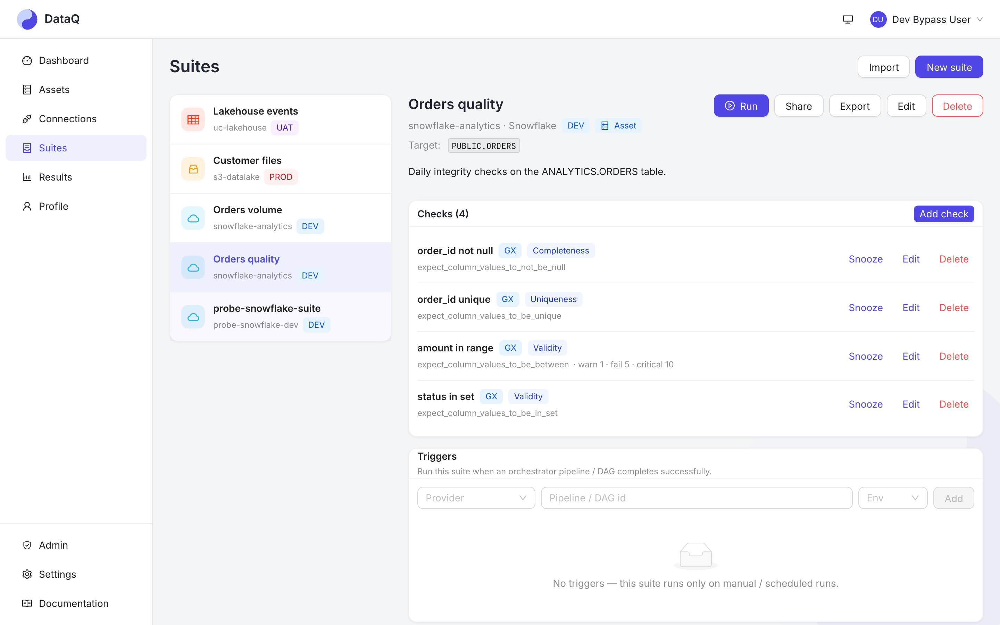
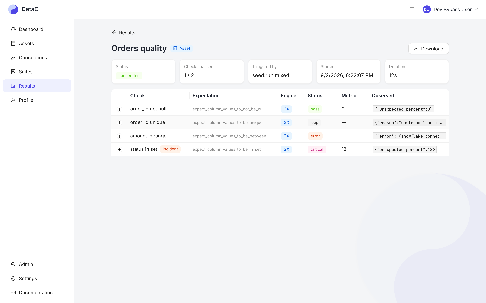
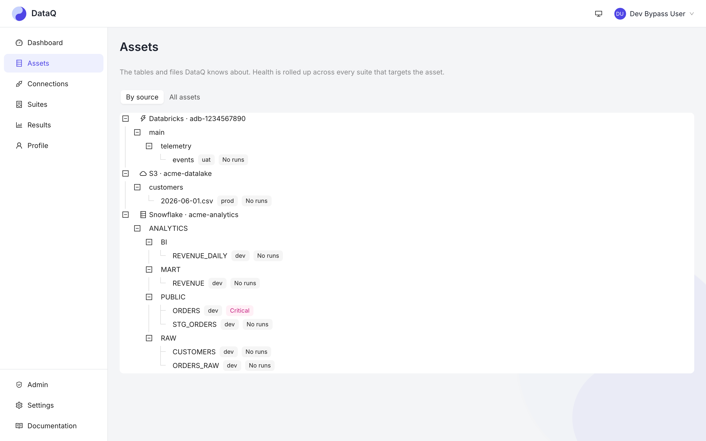

Freshness, volume, schema-drift and value checks across your warehouses, lakehouses and object stores — run the moment a pipeline finishes, routed to the team that owns the data, and open to your AI assistant over MCP.
Seven kinds of check, three orchestrators, every alert de-duplicated, and one assistant-ready interface — on infrastructure you run.
Freshness, volume and schema-drift monitors notice a load that never arrived, arrived half-empty or changed shape. Twenty-five vetted Great Expectations types, custom SQL with a live dry-run, anomaly detection on a learned baseline, and cross-dataset comparison cover the rest.
Azure Data Factory, Airflow and dbt tell DataQ when a load finishes; the suite runs right after a success and the result is correlated to that pipeline run. Failures alert without running checks on nothing. Cron schedules cover everything else.
Microsoft Teams, Slack, email and webhooks, routed by severity and configured per suite. A broken check reports when it breaks and when it gets worse — not on every run.
Real screens from the seeded demo workspace — the same ones in the tutorials.




Open source, MIT licensed, self-hosted — one docker compose up to evaluate, Terraform for Azure or AWS to run it for real.